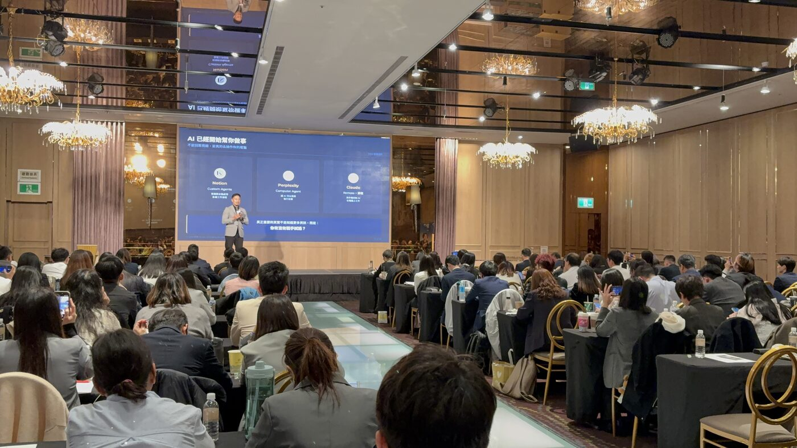
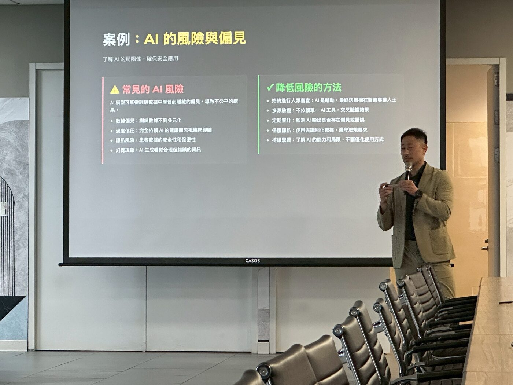
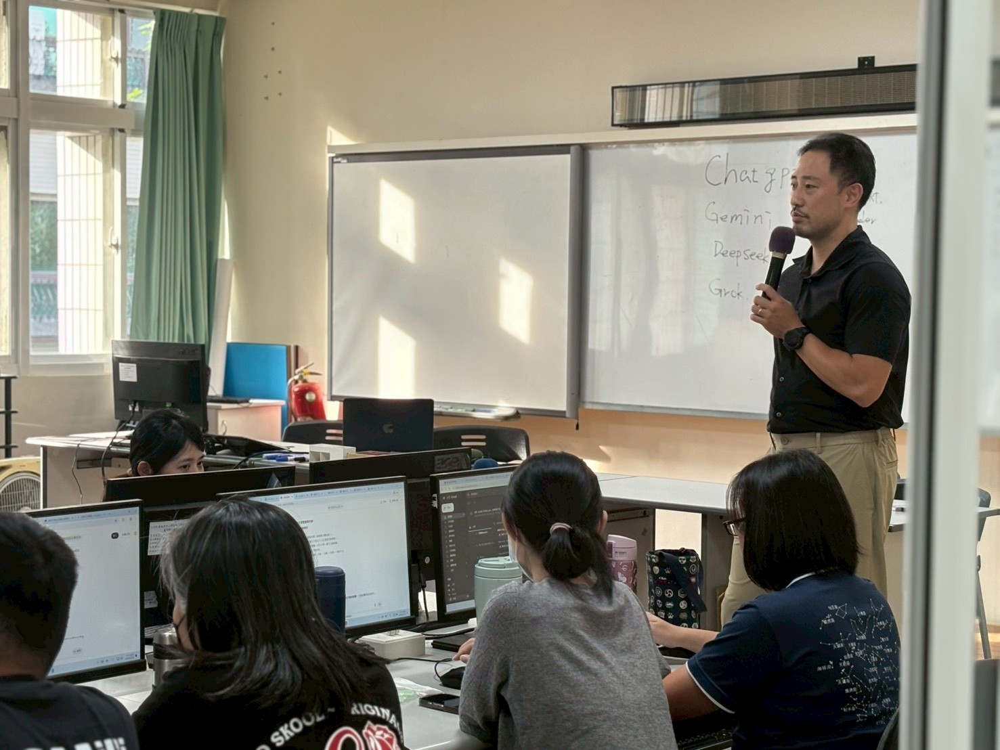
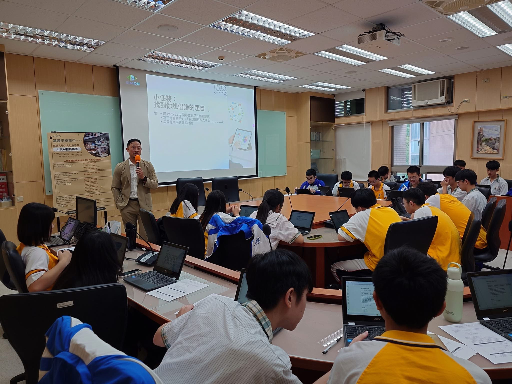
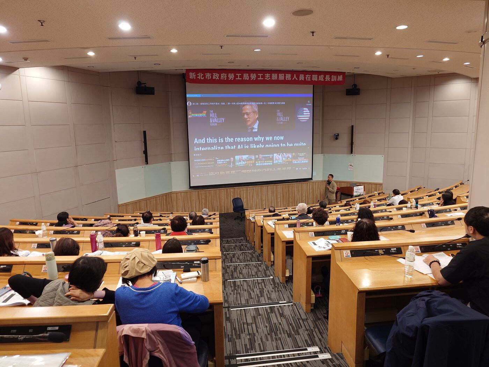
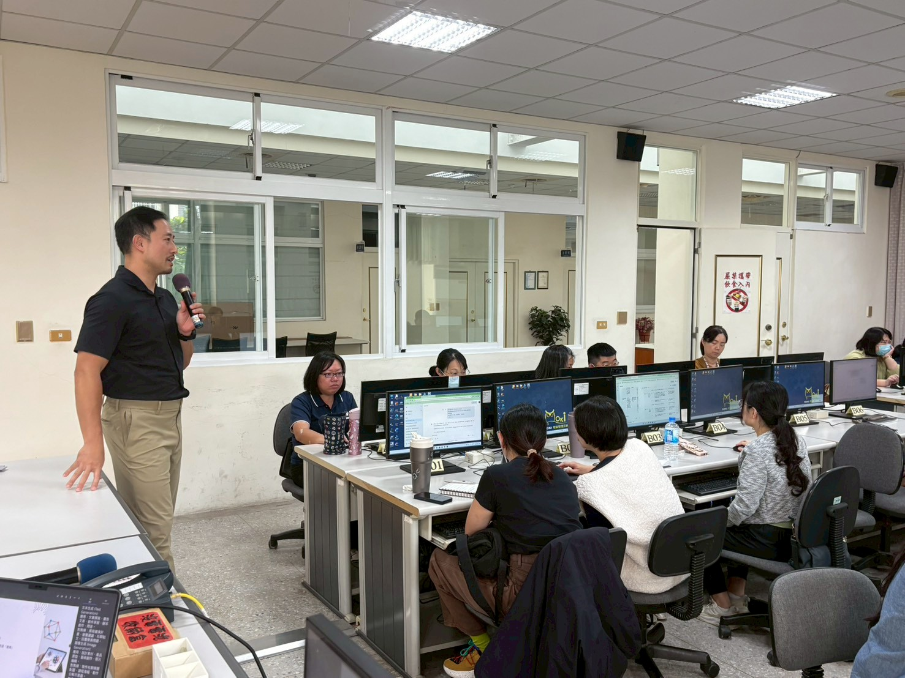

很多 AI 課程講完了，學員還是不知道從哪裡開始。我在趨勢科技做了十年資安、在外商帶過 AI 導入專案、也自己出來創業——三段不同的身份，讓我看到同一件事：卡關的地方從來不是技術，是沒有人把第一步說清楚。
讓科技更貼近人，讓服務更有溫度
跑過的一些場合。每個主辦單位的問題都不一樣，這是我喜歡這份工作的原因。






六個產業，六種不同的問題。這些是跑過之後留下來的真實名單。
業務員如何在拜訪前用 AI 做客戶研究，縮短暖場時間。
病患帶著 AI 給的答案進診間——醫護如何回應、如何建立信任。
用 NotebookLM 把出版社 PDF 變成備課助手，直接出題、做差異化教材。
教學生怎麼用 AI 倡議——讓 AI 幫你思考，而不是替你思考。
小編建立品牌風格指引，讓每一篇貼文都像自己寫的，只是快十倍。
沒有技術背景的志工如何用 AI 省掉日常重複工作的一半時間。
每次合作前我都會先了解你的產業和聽眾，內容不會是套版的
我設計課程的標準只有一個：學員離開教室時，手上要有一個今天就能試的東西，而不是一疊漂亮的簡報。半天到兩天不等，視需求調整。
60–90 分鐘。我不做通用版簡報——每場演講前我會了解你的聽眾是誰、他們平常遇到什麼問題，然後把 AI 的話翻譯成他們聽得懂的語言。
不是來賣工具的。我會先看你現有的流程哪裡在浪費時間、哪裡有風險，再建議從哪裡開始，不建議一次全部換掉。
六個產業，六種不同的卡法。每次我以為下一場會差不多，結果都不一樣。
拜訪客戶前，你準備了多少？AI 能在 10 分鐘內幫你整理出對方公司的近況、可能的痛點、該問的問題。成交率的差距，往前發生在見面之前。
現在的病患進診間前，很多人已經問過 ChatGPT 了。這不是威脅，是機會——醫護人員如果懂得用 AI 輔助溝通與記錄，反而能建立更強的信任感。
把出版社 PDF 上傳進 NotebookLM，直接問它出考題、做差異化補充、生成討論素材——它只根據你的教材回答，不會亂發揮。老師的時間應該花在判斷，不是打字。
不是叫學生不要用，而是教他們怎麼用得有水準。從作業輔助到專題研究，建立讓 AI 幫你思考而不是替你思考的習慣。
針對沒有技術背景的勞工與志工設計。不談架構、不談參數，只談你每天在做的事情，哪些可以用 AI 省一半時間。
用 AI 寫出來的東西全都一個味，是因為你沒有給 AI 你的個性。這堂課教你怎麼建立風格指引，讓每一篇貼文都像你寫的，只是快十倍。
我不是從學術界轉過來的 AI 講師。我在 HP 和趨勢科技花了 13 年做系統和資安，然後在外商帶 AI 導入專案，後來自己創業。每一段經歷都讓我更清楚：企業在用 AI 時，真正的障礙不是技術，是不知道從哪裡開始、不知道該信任誰。
所以我在課前一定先了解聽眾。台南文化局的小編最怕「貼文寫出來都一個味」；民生醫院的護理師在意的是病患問了 AI 之後她要怎麼應對；磊山保經的業務員想知道見客戶前十分鐘能準備什麼。問題不一樣，課就不一樣。
「最常有人問我：你覺得 AI 會取代哪些工作？我的答案是：不會用 AI 的人，會被懂得用 AI 的人取代。這不是威脅，是機會——前提是你知道怎麼用。」
說清楚你的情況就好，不用準備完整需求書——我們先聊聊再說。